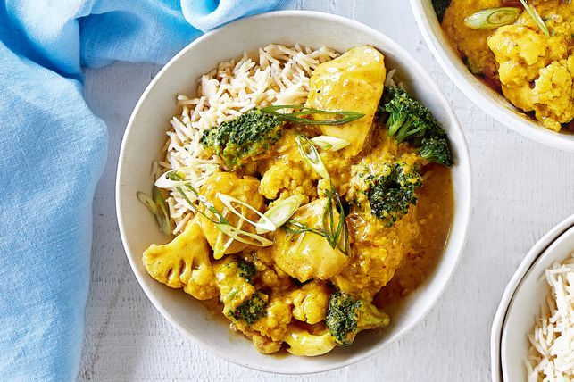

Chicken Satay

Description
This easy-to-make chicken satay dish takes only ten minutes to prepare and 25 minutes to cook.
You'll have dinner on the table in no time!
Ingredients
- 500g Coles RSPCA Approved Australian Chicken Thigh Fillets, trimmed, coarsely chopped
- 485g jar Coles Satay Simmer Sauce
- 2 x 150g pkts broccoli & cauliflower florets
- 2 x 250g pkts Uncle Ben's Coconut Rice
- 2 spring onions, thinly sliced
Steps
- Spray a large saucepan with olive oil spray and place over medium heat. Cook the chicken, in 2 batches, turning, for 4 mins or until golden brown. Transfer to a plate.
- Add the satay sauce and 2 tbs water to the pan. Stir to combine. Stir in the chicken. Reduce heat to low and cook, stirring occasionally, for 10 mins or until the chicken is cooked through.
- Add the broccoli and cauliflower to the pan and cook for a further 3 mins or until the vegetables are just tender.
- Meanwhile, heat the rice following packet directions.
- Divide the rice among serving bowls. Top with chicken mixture and sprinkle with spring onion.